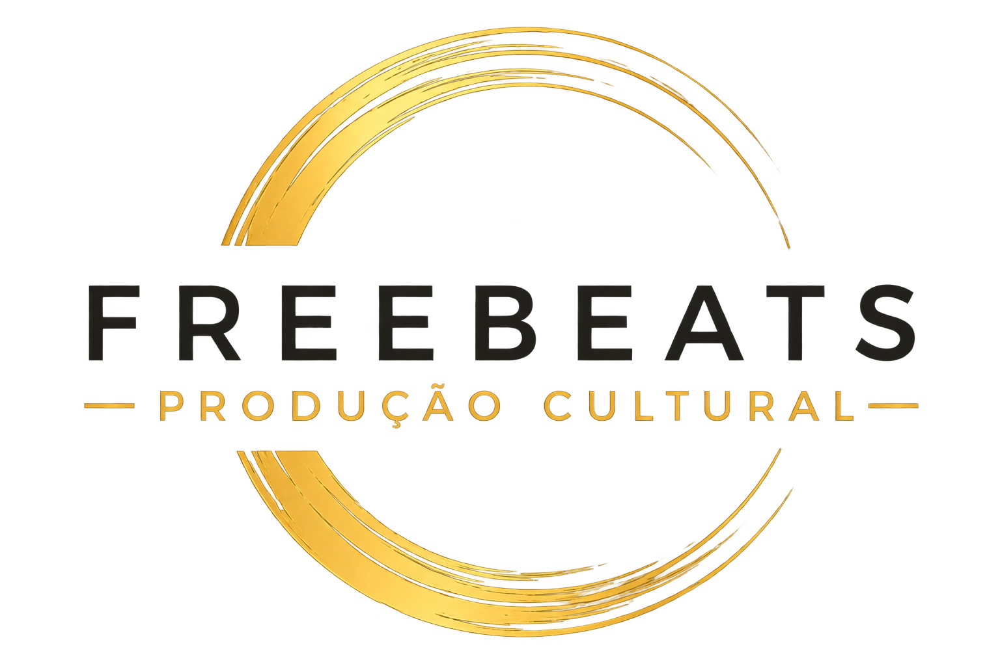

Ative o JavaScript para consultar os projetos e usar as funcionalidades do site. Pode contactar-nos diretamente por email ou telefone no rodapé.
Erro 404
O endereço não existe. Continue a descobrir o nosso trabalho.